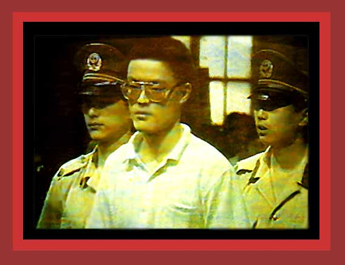

| There were many Tiananmen Square like demonstrations in a number of Chinese cities, and all were equally squashed with force. The Chinese National TV reported on June 16, 1989, for example, that a Shanghai Court had sentenced three men to death for their involvement in the "anti-government riot" of June 6. Here is a photo of one of the three. For documentation on communist China's democide and repression, see China's Bloody Century; and Chapter 1 of Saving Lives, Enriching Life Source: "Index Of The Tam Photo Series: Massacre". |